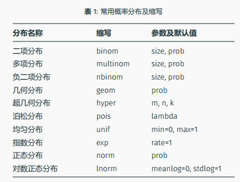
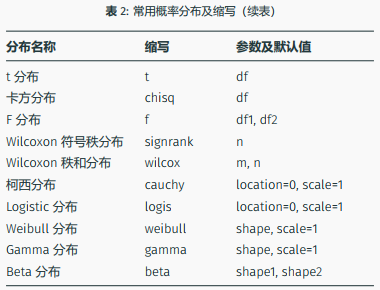

Score_Conv <- function(score) {
# 实现将一个百分制分数转化为五级分数
# 输入参数：score为数值型，百分制分数
# 返回值：res为字符串型，五分制分数
...
}4 自定义函数
通过一个例子来学习如何自定义一个函数
4.1 自定义函数把百分制分数转化为五分制分数的功能
第一步，分析输入和输出，设计函数外形
输入有几个，分别是什么，适合用什么数据类型存放？
输出有几个，分别是什么，适合用什么数据类型存放？
这个问题的输入有1个：百分制分数，数值型；输出有1个：五分制分数，字符串。在此基础设计自定义函数的外形。
第二步，梳理功能实现的过程
分解问题+实例梳理+翻译及调试
拿一组本例的具体形参的值作为输入，如如何将76分转换为五分制分数”良”，这依赖于对五级分数界限的选取，选定后可以使用分支判断实现。逐步调试，得到正确的返回值结果，这步很关键，是实现下一步复杂功能的基础。
library(tidyverse)── Attaching packages ─────────────────────────────────────── tidyverse 1.3.1 ──✔ ggplot2 3.3.6 ✔ purrr 0.3.4
✔ tibble 3.1.7 ✔ dplyr 1.0.9
✔ tidyr 1.2.0 ✔ stringr 1.4.0
✔ readr 2.1.2 ✔ forcats 0.5.1── Conflicts ────────────────────────────────────────── tidyverse_conflicts() ──
✖ dplyr::filter() masks stats::filter()
✖ dplyr::lag() masks stats::lag()score <- 76
if (score >= 90) {
res <- "优"
} else if (score >= 80) {
res <- "良"
} else if (score >= 70) {
res <- "中"
} else if (score >= 60) {
res <- "及格"
} else {
res <- "不及格"
}
res[1] "中"第三步，将第二部的代码封装成为函数体
Score_Conv <- function(score) {
if (score >= 90) {
res <- "优"
} else if (score >= 80) {
res <- "良"
} else if (score >= 70) {
res <- "中"
} else if (score >= 60) {
res <- "及格"
} else {
res <- "不及格"
}
res
}在函数编制好后，我们可以尝试调用它
Score_Conv(76)[1] "中"4.2 改进函数-函数向量化
目前的函数仅能输入一个参数，在实际下通常需要输入多个参数。我们有两种方法实现
方法1：直接修改自定义函数
输入的参数为一个数值向量，对函数体进行修改。
Score_Conv2 <- function(score) {
n <- length(score)
res <- vector("character", n)
for (i in 1:n) {
if (score[i] >= 90) {
res[i] <- "优"
} else if (score[i] >= 80) {
res[i] <- "良"
} else if (score[i] >= 70) {
res[i] <- "中"
} else if (score[i] >= 60) {
res[i] <- "及格"
} else {
res[i] <- "不及格"
}
}
res
}
# 测试函数
Score_Conv2(c(35, 67, 100))[1] "不及格" "及格" "优" 方法2：直接使用map系列函数
得益于purrr中的map系列函数，我们可以将一个函数批量用在一些列元素中，从而达到不修改原函数而实现向量化操作。
scores <- c(35, 67, 100)
map_chr(scores, Score_Conv)[1] "不及格" "及格" "优" 4.3 返回多个处理值
如果需要返回多个处理值，则需要将多个值大包成一个列表（或数据框）再返回。
# 自定义函数，实现计算一个数值型向量的均值和标准差。
MeanSad <- function(x) {
mu <- mean(x)
std <- sqrt(sum((x - mu)^2) / (length(x) - 1))
paste(paste("均值为", mu)," ", paste("标准差为", std))
}
MeanSad(c(2, 4, 6, 9, 12))[1] "均值为 6.6 标准差为 3.97492138287036"4.4 ...参数
一般函数参数只接受一个对象，比如对两个数加和的函数，给它 3 个数加和就会报错
...参数可以接受多个对象，并将其打包为一个列表传递给函数体
my_sum2 <- function(...){
sum(...)
}
my_sum2(1, 2, 3, 4, 5, 6)[1] 21
Danger
r中常用的概率函数中，不同前缀的含义分别如下：
d：密度函数（density）
p：分布函数（distribution）
q：分位数函数（quantile）
r：随机数函数（random）
上述四个字母+分布缩写，就构成通常使用的概率函数
dnorm(3, 0, 2) # 正态分布N(0, 4)在3处的密度值[1] 0.0647588rnorm(5, 0, 1) # 生成5个服从N(0, 1)分布的随机数[1] -0.3192688 1.3478645 0.4747361 1.1571174 -0.4027171

(时间序列函数)[.todo]